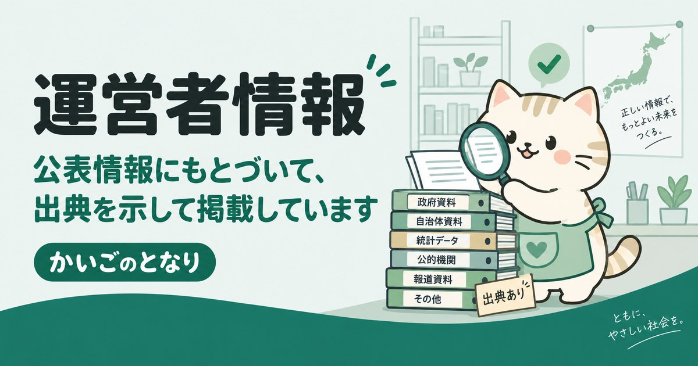

運営者情報

公表情報にもとづいて、出典を示して掲載しています。
運営者
| サイト名 | かいごのとなり（kaigonotonari.com） |
|---|---|
| 運営者 | CKT COMPANY（CKTカンパニー） |
| 代表者 | チェ・インホ（Choi Inho）／アン・テフン（Ahn Taeheung） |
| 所在地 | 大韓民国 ソウル特別市江西区空港大路209, 1116号 |
| 事業者登録番号 | 442-01-01103 |
| 連絡先 | お問い合わせフォームからご連絡ください |
| 開設 | 2026年9月 |
当サイトは日本国外（大韓民国）から運営しています。掲載内容は日本の公的機関・自治体・各事業者が公表している情報にもとづいて作成しています。
このサイトをつくった理由
親の暮らしに手が必要になったとき、最初にぶつかるのは「何から調べればいいか分からない」という壁です。介護保険の制度は全国共通でも、事業者も、自治体の支援も、相談窓口の名前すら市区町村ごとに違います。それなのに、地域単位でまとまった情報は意外と見つかりません。
かいごのとなりは、市区町村単位で「使える事業者」と「公的な相談窓口」を一枚にまとめることを目的にしています。介護サービスだけでなく、宅配弁当や住まいのように介護保険の外にあるものも同じページ群で扱うのは、実際の暮らしがその境目で分かれていないからです。
掲載方針
- 公表情報にもとづいて掲載します事業者情報は厚生労働省「介護サービス情報公表システム」、各自治体の公表資料、各事業者の公式発表を出典としています。ページごとに出典と最終確認日を明記しています。
- 料金は必ず根拠を示します「安い」「おすすめ」といった評価ではなく、単位数・地域区分・公表価格など、計算の根拠を示します。根拠を示せないものは書きません。
- ランキングや順位づけをしません掲載順は掲載料や紹介料では決まりません。順位づけが必要な場面では、その基準を明記します。
- 広告は広告と明記しますアフィリエイトリンクを含むページには、ページ上部に広告表記を掲示しています。詳しくは広告についてをご覧ください。
- 医療・介護の判断は専門家に委ねます当サイトは情報の整理を行うもので、診断・助言・あっせんは行いません。
掲載されている事業者の方へ
掲載内容の訂正・追加・削除のご依頼を受け付けています。お問い合わせから、事業所名と該当ページのURLを添えてご連絡ください。5営業日以内にご返信します。
削除のご依頼をいただいた事業所は除外リストに登録し、以後の情報更新でも再掲載されないようにしています。